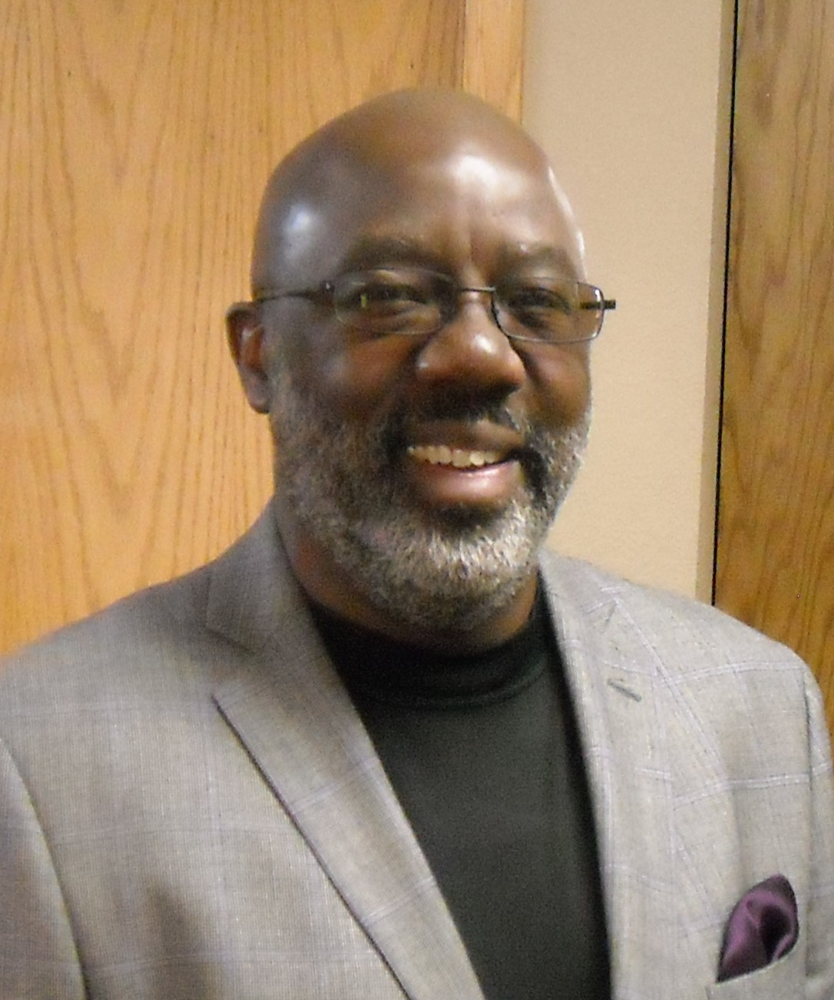

What is New for Ministry Training?
How great is this: Empowering and equipping ministry, for real college credit, and for a small fraction of the usual cost? Better yet, this program is coming very soon near you!
More than ever before, men and women committed to significant ministry for our Lord Jesus Christ must be equipped and empowered through education that is Bible-based, Christ-centered, Spirit-led, and excellent. The Lord clearly wants us to study the Bible carefully, to get trained, and to empower others through their training, too. This need for educational empowerment has always been crucial, but now more than ever—as life is more and more complicated, and as the people in our communities are becoming more aware, too. Even pastors with accredited seminary degrees should still take one or two excellent courses a year for their continuing education, to help maintain their crucial mental and spiritual vibrancy.
However, the continuing problem for us in the New York area is that excellent ministry and leadership training has been too expensive or too elusive. But there is every reason why significant ministry training should be affordable and achievable. Of course, we fully understand the costs of beautiful campuses and highly educated professors. We understand those costs and respect those professors. But we serve the gracious Creator of all good things, and we are creative people, too!
Now, there is an excellent new model of ministry training invading New York City this fall. It is holistic, college-level, Bible-based, Christ-centered, Spirit-led, affordable, and achievable. This creative ministry training model is provided by the newly established New York Urban Ministry Institute (NYUMI), affiliated with World Impact, a vibrant Los Angeles-based ministry. World Impact has created this out- standing Capstone Curriculum of 16 excellent modules that will now be taught in New York for the first time. The Curriculum covers the full range of ministry skills, including four modules in Biblical Studies, four in Theology and Ethics, four in ministry, and four in specifically urban flourishing. I have inspected these modules and they are all intensely well designed—Biblical, thorough, interesting, empowering.
All the Capstone Curriculum modules were crafted by a gifted, evangelical, African-American, preacher-scholar—the brilliant Rev. Don L. Davis, PhD. Dr. Davis earned his college and Master’s degrees from Wheaton College and then his Ph.D. in Religion from the University of Iowa. Each of the nine 2-hour class meetings in each module includes affirmations of faith, scripture reading, scripture memorization, two case study discussions, specific ministry planning, Biblical exegesis, a 25-minute DVD lecture by Dr. Davis, discussion, and question and answer time. Every student must devote at least 5 hours of work outside of class each week. The materials are so well-crafted that the local facilitators for the modules do not need to be experts on the related subject matter. The holistic ministry training of the Capstone Curriculum is tremendously empowering.
Great News: The leaders of both Nyack College and Lancaster Bible College endorse this program and will give college credit to anyone transferring to them any module or the whole Curriculum. Each module receives 1.5-1.7 credits, or 24-27 credits for all 16 modules. NYUMI will also issue certificates and endorsements for ordination.
In addition, students who have already earned their college degrees may choose Master’s-level homework for each module, and work toward their Master’s level certificates and diplomas in an agreement with the NY Divinity School.
The true priority: men and women need excellent training, for excellent ministry, that serves our excellent Lord. Mindless sincerity has been excused far too often. Unskilled meanderings in the place of ministry have led to the tragic loss of much of the Church’s influence. Trained ministers need continuing education, and under-trained and future ministers need recognized, NYUMI’s excellent equipping and empowering. The Capstone Curriculum is the equipping and empowering that our leaders and minister need.
Become involved two ways: First, you can sign up for one or more of the at least five NYUMI classes now scheduled to start mid-September in Manhattan, Brooklyn and the Bronx. See www.NYUMI.net for details. Second, write to DrPaul@NYUMI.net if your church or ministry would like to host future courses. We can bring the whole program to you.
Paul de Vries is the President of the NY Divinity School. For more information visit www.paulde vries.com